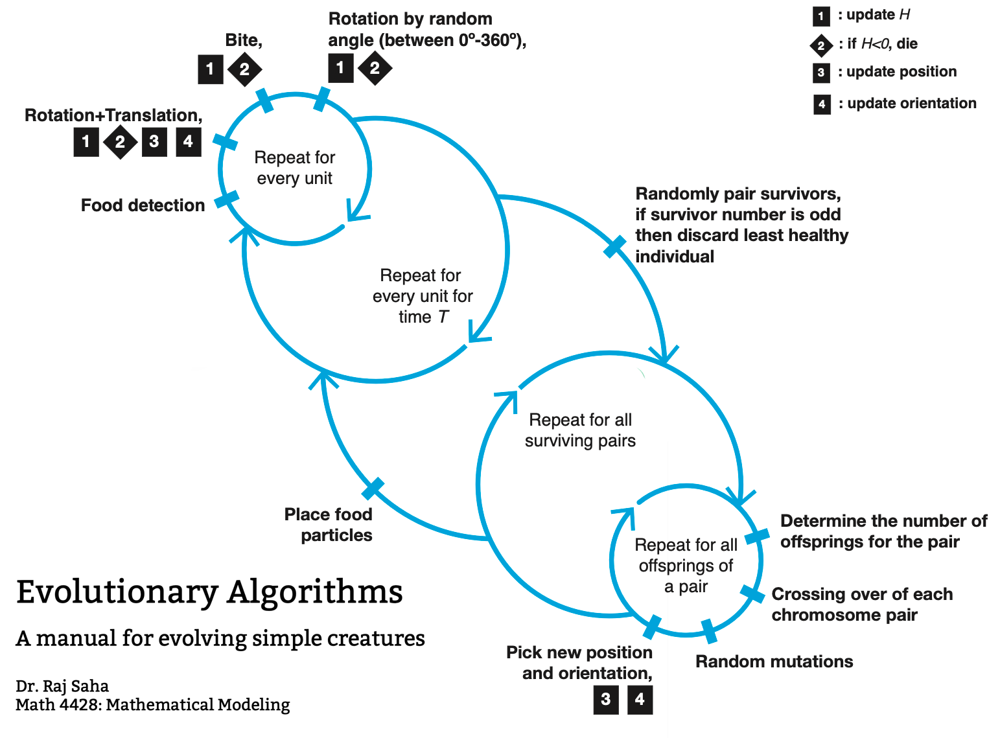
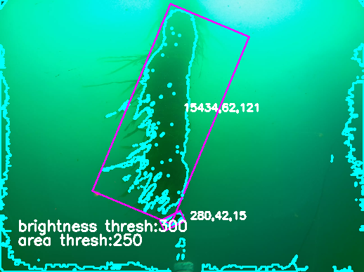
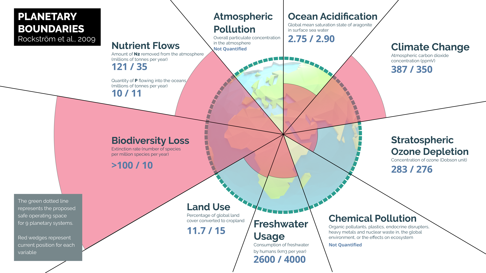
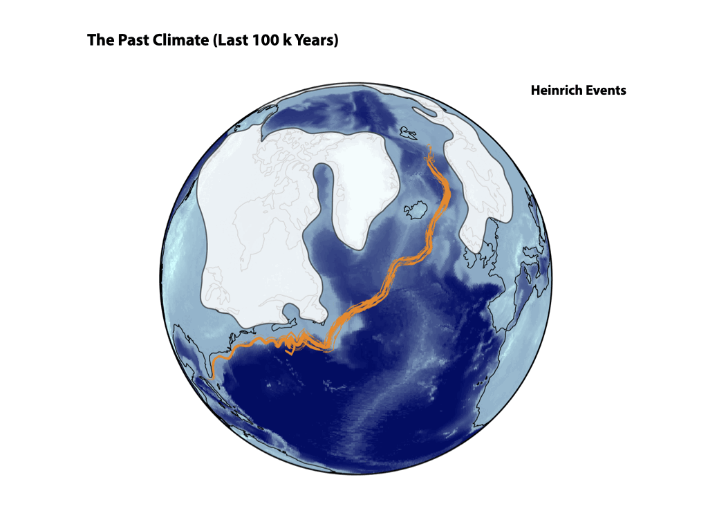
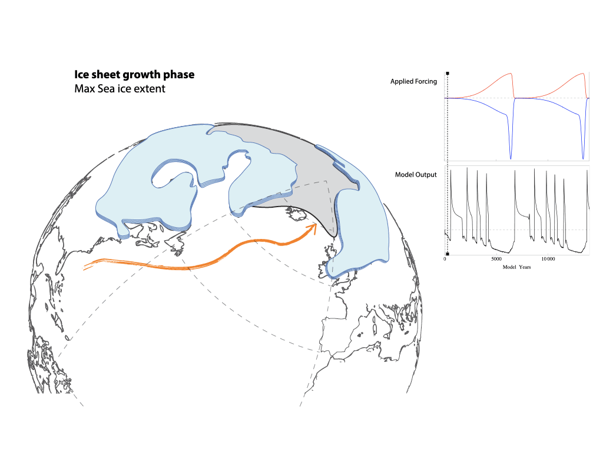

A D3.js based visualization of time lapse satellite imagery of erosion in the Ganges Delta. ArticleComputer Vision analysis of change in lake area over time. Article3-d simulation of interacting fireflies, synchronyMechanics of a Fourier TransformSimulation of particle trajectories with SST forecastsField video of firefliesCV algorithm to track and analyze individual bioluminescent agentA descriptive manual for evolving virtual organisms via selectionCV detection of kelp, estimation of kelp biomassPoster Schematic of Planetary BoundariesLogo/site design for MCRNSchematic of Heinrich Events, showing interaction between the North Atlantic Current and the Laurentide Ice SheetCartoon of the interaction between ocean circulation, sea-ice and ice-sheets